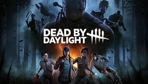

Dead by Daylight

Trapped forever in a realm of eldritch evil where even death is not an escape, four determined Survivors face a bloodthirsty Killer in a vicious game of nerve and wits. Pick a side and step into a world of tension and terror with horror gaming's best asymmetrical multiplayer.
Survivors play in third-person and have the advantage of better situational awareness. The Killer plays in first-person and is more focused on their prey.
The Survivors' goal in each encounter is to escape the Killing Ground without getting caught by the Killer - something that sounds easier than it is, especially when the environment changes every time you play.